PRODUCT DESIGN LEADER
DESIGN SYSTEMS · WEARABLES · AI NATIVE · AR / VR
ABOUT
Senior Design Manager at Meta — 14 years crafting products, 7 leading teams. Most recently, I've led design teams across design systems, AI tooling, platform, and ecosystem, while shipping multiple 0 → 1 products.
14
Years in design
7
Years leading teams
5+
0→1 PRODUCTS SHIPPED
MY LEADERSHIP APPROACH
01 — People first
The right people and skillsets are the foundation of a high-performing team. Also, the drive to deliver design excellence is one of the most important qualities I seek in product designers.
02 — PROJECT FIT
I allocate designers to projects that match their passion and strengths, while regularly pushing them into territory that creates growth opportunities they are interested in.
03 — Process with purpose
Meetings need a reason to exist. I invest in crits, clear decision-making frameworks, and systems for how the team works together. How decisions are made should be clear to everyone on the team.
04 — Goals & follow-through
I work collaborate closely to set team and individual goals together with my reports, then follow up regularly — not just at review time. This ensures there are no performance or expectation gaps.
05 — Autonomy & fun
I try to give as much trust and autonomy as I can. I'm there to unblock, escalate, and support. I want everyone to genuinely enjoy the work. We're designers; this should be fun.
WHAT I’LL WALK THROUGH
01
A design system built for a waveguide passthrough display — and the wearables color system beneath it.
02
The first consumer EMG text input — writing messages by moving your fingers through the air.
01
CASE STUDY 01
DESIGN LEAD · 2025
META WEARABLES
OVERVIEW
Coming off the breakout success of Meta's first displayless AI glasses, the challenge was matching that momentum — and building continuity for the people who already lived in the experience.
Users had set up and visually interacted with their glasses through the tandem Meta AI app. Our job was to take that same AI experience and bring it onto a pair of glasses with a display. This meant building not just the AI experience, but an entire operating system and the design system to support it.
THE TRANSLATION
A core part of this project was re-imagining what lived in the Meta AI app for the constraints of a heads-up, glanceable display.
META AI APP
Display-less glasses + phone
TRANSLATE
RAY-BAN META WITH DISPLAY
600x600 Heads-up · in-lens
THE GOAL & HOW WE MEASURED IT
WDS measured success through a blend of system adoption, quality code coverage and shipping the entire system on time for the Ray-Ban Meta w/Display launch in Fall 2025.
OBJECTIVES
Component Adoption
% of UI components leveraging the system across surfaces.
80%
Test Code Coverage
Automated test coverage for WDS components (org-wide target).
70%
Feature Complete
WDS delivered on Hypernova (MRBD) on time for Day 0.
DAY 0
CONSIDERATIONS
Bringing an experience that lived across display-less glasses and the Meta AI app onto a single pair of glasses with a display meant testing exactly what that display could do — as the first of its kind to market.Waveguide displays bounce light through a thin piece of glass to reach your eye, and the physics create unavoidable artifacts. Our first job was to learn exactly which design choices caused them — and deliver a system that mitigates any negative visual effects.
CONSIDERATIONS
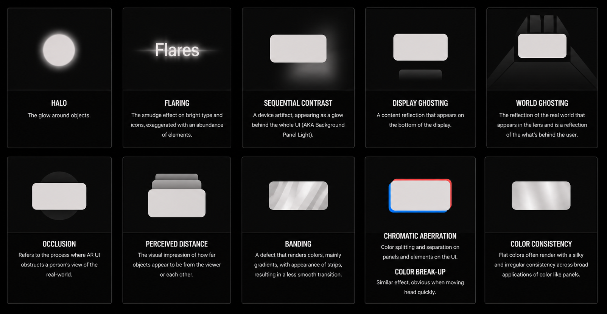
REAL ARTIFACT EXAMPLES
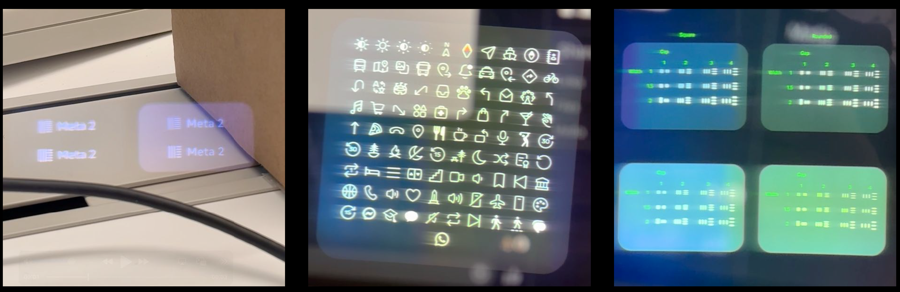
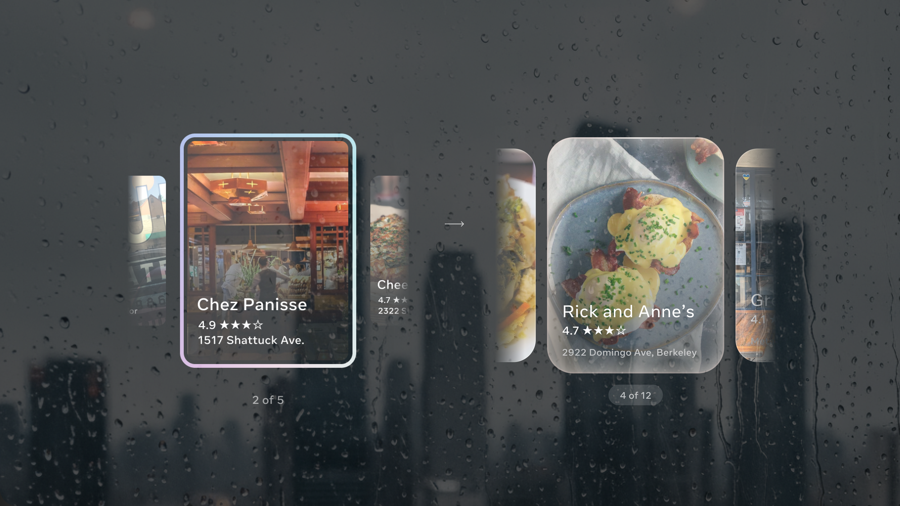
EARLY EXPLORATIONS
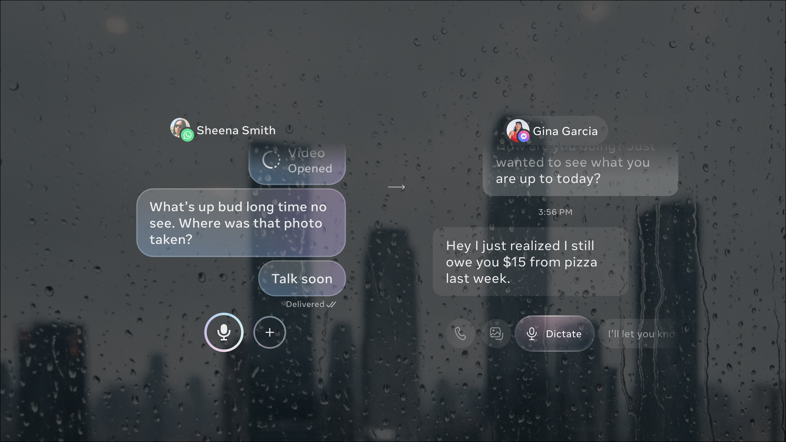
EARLY EXPLORATIONS
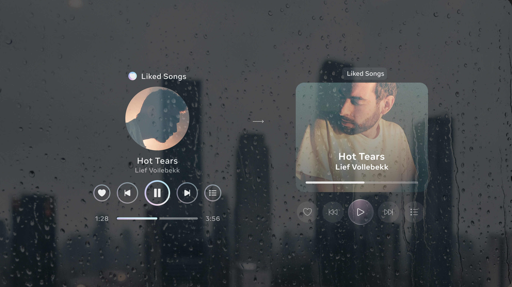
EARLY EXPLORATIONS
INSIGHTS
Early on, we discovered that certain design choices made the device harder to see and use, due to the display constraints.
01
Text needed to be on a container
By adding containers behind all text, we could minimize the banding and flaring that was happening.
02
EMG target states had to be distinct
Subtle interaction states wouldn't work on this device, due to less contrast with your environment as the background.
03
Colors needed special treatment
All colors needed to go through rigorous testing and exploration. Brand's color palettes typically needed to be tweaked for visibility.
04
Motion was key
To interact with the 3-panel OS and for a user to understand where they were in the product, motion was crucial.
05
Filled icons and thick strokes caused flaring
Early versions of our displays caused our icons to flare. We switched to outlined icons until our displays improved.
06
Type needed to be optimized
We ran a study comparing multiple type families to improve legibility and performance on the display. Less condensed type styles were more more legible.
COMPONENT LIBRARY
CARD STACK
Notifications
COMPONENT LIBRARY
App Launcher
BUTTON RAIL
COMPONENT LIBRARY
WIDGETS
Live AI
IN CONTEXT
Media
Messaging
IN MOTION
Conversation list
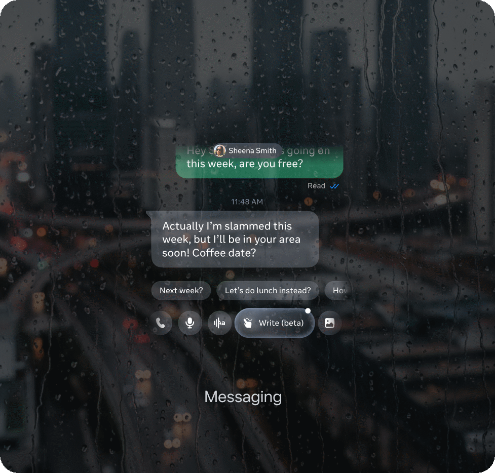
Conversation thread
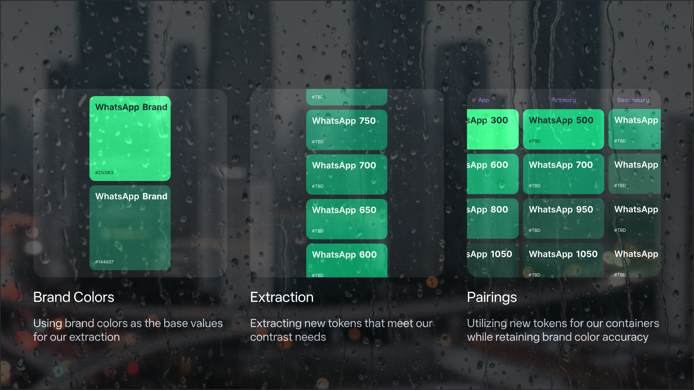
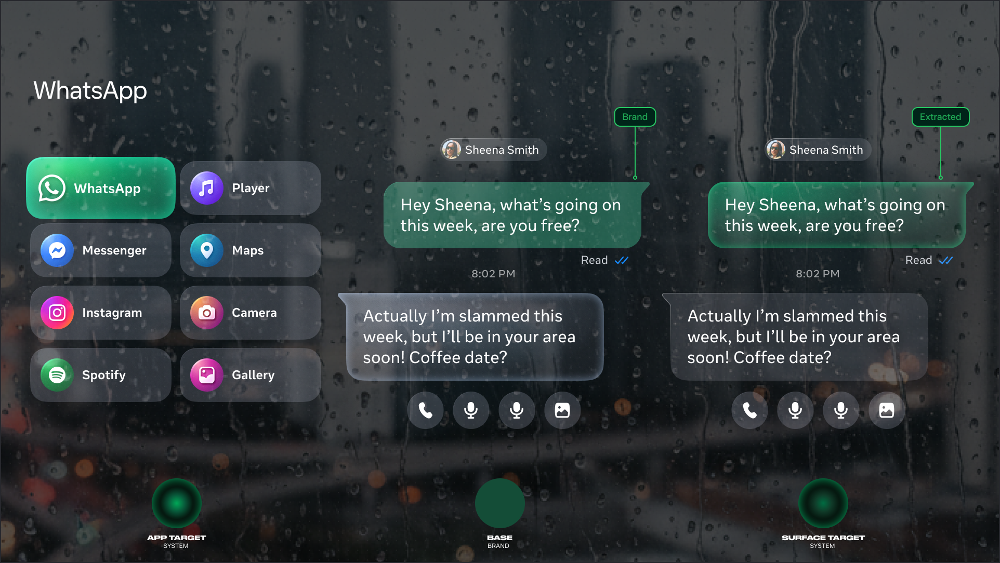
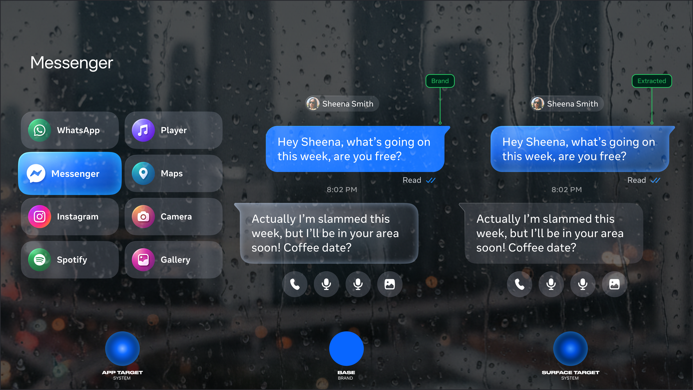
COMPONENT EXAMPLES
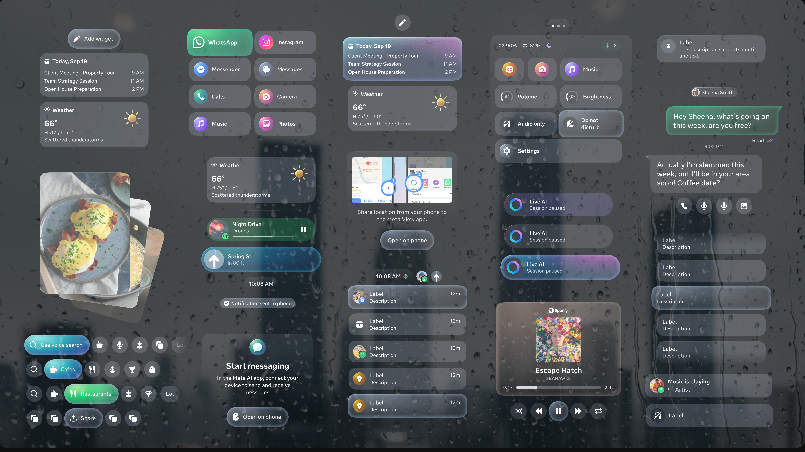
CHALLENGES
Leading a team that's building a system for a brand-new display category — under launch pressure, across two surfaces, and against the physics of the hardware itself.
01
Coverage across 25+ apps
Supporting 25+ app experiences so components covered every common use case — and deciding what to build as a system component versus a one-off.
02
Building while shipping
Building the system at the same time app teams were building on it. Aggressive timelines left no luxury of taking our time and shipping when ready.
03
One system, two purposes
Serving both the System/OS and app experiences — distinct enough for users to tell apart, yet unified enough to feel like one product.
04
Optimizing the display
Mitigating the visual artifacts typical of light pass-through displays — flaring, ghosting and banding — at the component level.
LEADERSHIP
6 designers. 3 months. 25+ apps. I reallocated the entire team to this product — the first of three to market — to maximise focus and partner support.
01
Full team reallocation
Pushed to concentrate all 6 designers on this product. Being first to market made focus non-negotiable — it allowed the team to support app teams closely during the sprint.
02
Point people per area
Assigned each designer ownership of specific features and foundations — e.g. one person owned Meta AI surfaces, typography, and the color system.
03
Weekly crits & office hours
Multiple sessions per week, plus an intake form with automation feeding the task board and a support rotation for FYI requests from app teams.
04
WDS approval gate
With the STL, set up a formal sign-off process before any feature shipped — ensuring system compliance, holding the quality bar, and representing the team in leadership reviews.
05
On-device Decisions
I realized early on that decisions needed to be based on actual rendering, not designs in Figma, due to the quirks of the display.
06
Driving leadership approval
I represented our team in regular ‘Design Launch Review’ meetings with the head of design, to get approvals to ship to production.
COLLABORATION
STL
Single Threaded Leader + Feature teams
Co-created the WDS approval gate — a formal sign-off before any feature shipped. Held teams accountable to the system and defended design decisions at launch reviews with the head of design.
XMDS
Across Meta Design System
Leveraged their typography and iconography as a shared foundation — redesigned and optimised for glasses. Negotiated a pipeline where their production designers delivered optimised icons on request.
Core UX
Operating System Team
Partnered to define navigational, interactive, and gestural patterns. Built both the WDS component library and the core UX library together — one consistent foundation across the full product.
HOW SUCCESS WAS MEASURED
A blend of adoption metrics, engineering quality, design cohesion, and team efficiency — each held to a target and measured against the launch.
95%
Component Adoption · GOAL 80%
95% of Wearables app teams migrated to WDS prior to launch.
90%
Test Code Coverage · Goal 70%
Exceeded the org-wide target by 20% in automated quality coverage for WDS components.
Shipped
Feature Complete · DAY 0 LAUNCH
Delivered on Hypernova (MRBD), mitigating hardware constraints — flaring and banding, ahead of schedule.
KEY LEARNINGS
01
Focus beats breadth
Concentrating the full team on one product, the first of three to market, enabled closer app-team support and higher system quality than splitting attention would have allowed.
02
Build the gate early
Setting up the WDS approval process from day one prevented quality debt that would've been impossible to fix under launch pressure. A gate added mid-sprint breaks trust.
03
Shared foundations multiply leverage
Co-building WDS and Core UX libraries meant one consistent base — so the OS and apps felt like the same product rather than two teams sharing a display.
04
Physics is a design constraint
Understanding waveguide artifacts early shaped every token, component, and color decision. Waiting for hardware testing to surface issues would have meant reworking half the system at launch.
LAUNCH RECEPTION
NEURAL BAND
“Gesture recognition is almost flawless, with close to 100% accuracy.”
DAY-TO-DAY
“The built-in display has helped me look at my phone less throughout the day.”
OVERALL
“The glasses feel like a transformational gadget for life.”
NAVIGATION
“Turn-by-turn directions in an unfamiliar city — genuinely freeing. Eyes up, hands free.”
LIVE CAPTIONS
“Live captions are nearly instantaneous, appearing a split second after words were spoken.”
MESSAGING
“Something very cool about quickly watching a clip without having to pull out your phone.”
02
CASE STUDY 02 — NEURAL INPUT
DESIGN LEAD · 2026
OVERVIEW
The Neural Band reads the electromyographic signals of your forearm and turns them into text. EMG Handwriting lets you write by moving your fingers through the air, as if holding an invisible pen. I led the design team behind the components, patterns, and interactions, in close partnership with UXR and Inputs engineering.
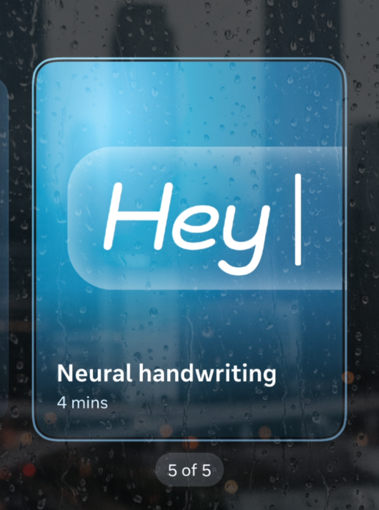
THE GOAL & HOW WE MEASURED IT
Success wasn’t a demo that worked once. It was input people kept reaching for — measured in daily use, retention over time, and how rarely users fall back to voice.
OBJECTIVES
DAU / MAU Ratio
Handwriting input specifically — a situational method, not a core comms tool.
≥0.10
Retention Curve
A wearable feature, not a daily app. Targets: D1 ≥ 60% · D7 ≥ 35% · D30 ≥ 20% — D30 maps to early habituation.
D30≥20%
Fallback Rate
Share of sessions ending in fallback to voice or pinch. Above 40% signals the model isn’t generalizing.
≤25%
THE CHALLENGE, BROKEN DOWN
Most input design starts with a surface — a keyboard, a touchscreen, a trackpad. EMG Handwriting had none. The input surface was invisible: the space in front of you, sensed through muscle signals rather than touch. That forced us to rethink feedback, discoverability, and error recovery from scratch.
01
Feedback
With no touch and no sound, the display was the only way to confirm a stroke had even registered.
02
Discoverability
Empty space gives no hint that a gesture is possible. Users had to learn what the band could sense, and how.
03
Error recovery
A misread letter needed a fast, low-effort fix — there was no backspace key to fall back on.
TEAM & PROCESS
My team owned the full design layer — every component, pattern, and interaction. UXR was embedded from day one; Inputs engineering was a constant partner. Through Meta’s internal dogfooding pilot, real users wore the Neural Band daily and reported back. Each round surfaced new edge cases — ambiguous gestures, fatigue, confidence thresholds — and we iterated rapidly against the evidence.
Embedded UXR
From day one, not a hand-off
Dogfooding Pilot
Daily wear, weekly feedback
Evidence-led
Many rounds of refinement
ACROSS THE SYSTEM
Messaging
Contact search
Prompt AI
IN MOTION
Contact search
Reply from notification
EMG HANDWRITING
FROM THE PILOT
Real users wore the Neural Band daily. Each pilot round exposed failure modes we could only find in the wild.
Ambiguous gestures
Strokes the model could confuse — disambiguated with context and a confidence signal rather than forcing a redo.
Accidental messages sent
Due to the send button being inside the input, users would accidentally send messages when trying to use autocomplete.
Print script
Handwriting when using block letters, or print script, performed better than when users wrote in cursive. This was added into tutorials.
EMG HANDWRITING
IMPROVEMENTS
One of the key findings in Dogfooding was that we needed to have a better tutorial to teach users how to use the feature. Motion/3D Designers on my team created this experience for launch.
INPUT SYSTEM
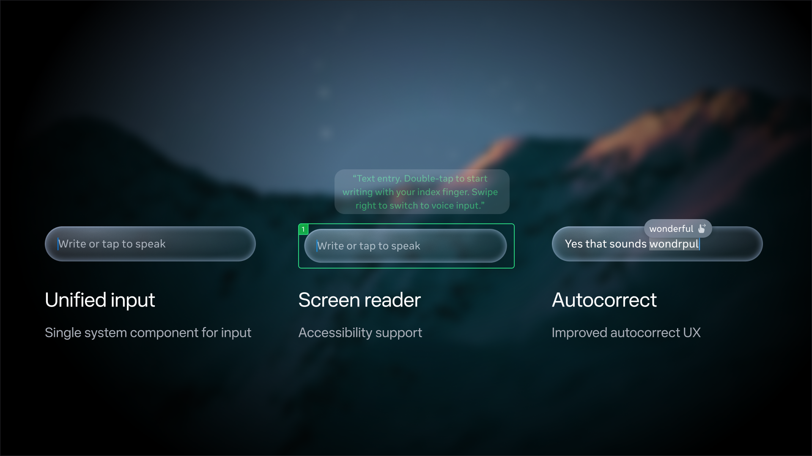
IMPROVEMENTS
IMPROVEMENTS
IMPROVEMENTS
Users were having issues with the send button being inside the text input and it was causing accidental sends. Moving this outside of the text input significantly reduced these issues per UXR.
CHALLENGES
One of the most novel features the team had ever built — and it brought years of unexpected challenges, from hardware testing to perfecting the gestures.
01
XFN Collaboration
This required design system, input designers and engineers to be in lock-step to ensure components aided the experience.
02
Editing & autocorrect
Writing was simple for users — but designing a fast, reliable way to make edits was harder than anyone expected.
03
Perfecting gestures
A lot of work was done to choose gestures that didn't conflict with others. Should swiping index finger right select 'suggestions' or navigate to send button?
04
Prompting AI vs. messaging
Should prompting AI feel the same as sending a message? Designing one input to scale across messaging, search and AI surfaced hard trade-offs.
OUTCOME — SPRING 2026
EMG Handwriting launched with the Meta Neural Band in spring 2026 — a new paradigm for how we interact with wearable devices.
Spring ’26
Shipped with Neural Band
−34%
Error rate in testing
1st
Consumer EMG text input
OUTCOMES
*EMG Handwriting shipped just weeks ago, so the results aren't in yet. These are the targets we set — calibrated against comparable wearable and input benchmarks.
KEY LEARNINGS
Designing the first consumer EMG input taught lessons you can only learn by shipping something genuinely new.
01
Novel input demands extraordinary onboarding
An invisible surface gives no affordance. The tutorial needed as much design investment as the gesture itself — discoverability can't be an afterthought.
02
Dogfooding is irreplaceable
Controlled testing couldn't surface accidental sends or print vs. cursive gaps. Only daily wear in the wild could. Build a pilot cadence in from the start, not as a QA pass at the end.
03
Error recovery is a first-class feature
With no physical keyboard fallback, a misread letter with no clear fix breaks trust fast. Recovery UX deserves as much craft as the primary writing flow.
04
XFN lock-step is non-negotiable
Design system, input designers, and engineers had to be in constant sync. Any handoff gap created inconsistencies invisible in Figma but immediately obvious on-device.
LAUNCH RECEPTION
HANDS-ON
“It made me want to start wearing my Meta Ray-Ban Display glasses more often.”
VIRTUAL TYPING
“You can reply to messages literally by lifting a finger.”
HAPTICS
“The gestures act like a clickable mouse made of my fingers.”
ACCURACY
“Gesture recognition is almost flawless, with close to 100% accuracy.”
EVERYDAY USE
“After two or three days of calibration time, it becomes genuinely intuitive.”
INPUT SPEED
“First-time users wrote at 20.9 words per minute.”